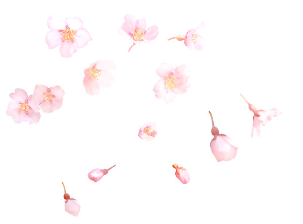

인생길 좋은말 좋은글 29가지
1. 생각은 인생의 소금이다
소금으로 간을 맞추지 않으면 그 음식은 맛이없다
2. 인생에게 행운이란 눈먼 장님이 아니다
대부분 부지런한 사람을 찾아간다
3. 인생이란 언제나 당장 행복할수는 없다
행복이란 언제나 앞으로 전진하며 탐구하는데 있다
4. 단단한 돌(石) 덩어리는 높은곳에서 떨어뜨리면 깨지기가 쉽다
5. 인생을 급히 서둘러 말하라!
노래를 배우기전에 말부터 배워야 한다
6. 인간은 자기 감옥문을 열고 달아날 권리가 없는 죄수다
7. 인생의 고민이란 어떠한일을 시작했기 때문에 생긴다기 보다는
할까말까 망설이는데서 더많이 생긴다
8. 운명을 기다리는 사람은 일확천금을 꿈꾸지만
능력을 믿는사람은 차근차근히 자기 운명을 열어나간다
9. 인생이란 아무리 고치고 고쳐도 결코 딱맞아 보이지 않는 옷이다
10. 인생의 운명이 확정되어 있다면 이를 경계한들 무슨 이익이 있는가?
11. 인생이 병들어 누워보고 비로서 건강의 고마움을 알고
난세를 당해보고 비로서 평화의 고마움을 안다고 해서는 민첩하다 할수없다
12. 큰 지헤가 있는사람은 얻었다고해서 기뻐하지않고
잃는다해서 근심하지 않는다
13. 눈을뜨고 있는 사람에게는 밤이길다
지친몸으로 걷는사람에게는 십리길도 멀다
14. 남의 속임을 알면서도 내색을 하지않으며
남의 푸대접을 알면서도 얼굴색을 변하지 않기란 매우 어려운 일이다
이런 사람에게는 넉넉한 맛이 있으며 깊은맛이 있다
15. 인생이란 황금새 우는소리는 아름답게 들리고
개구리 우는소리는 시끄럽게 들린다
16. 인생은 걸어다니는 그림자에 불과하다
17. 화날때 일수록 더욱 말씨를 부드럽게하고 조용히 앉아
자신의 숨소리가 급한가 헤아려 보아라!
이 세상에 살고있는 것은 손님으로 잠시 온 것으로 생각한다면
맞지않는 음식도 칭찬하며 먹을수 있지 않겠는가?
18. 인생의 대부분은 자신의 운명을 스스로 만들고 있다
19. 당신에게 지금까지 기회가 없었다고 한탄하지 말아라!
기회는 찾아오는것이 아니라 스스로 발견하는 것이다
20. 한마리의 개미가 한알의 보리를 물고 담벼락을 오르다가
여섯번을 떨어지더니 일곱번째에 성공하는 것을보고
용기를 얻어 드디어 적과 싸워이긴 영웅의 이야기가 있는데
이것이야말로 영원히 변치않는 성공의 비결이다
21. 이세상에 태어나서 좋은생각을 한번도 가져보지 않은 사람은 없다
다만 그러한 생각이 계속되지 않았을 뿐이다
22. 희망없는 일은 헛수고이고 목적없는 희망은 지속할수 없다
23. 부지런하고 신념을 가진 사람에게는 인생이 결코 짧은것이 아니다
24. 쉬어보이는 일도 해보면 어렵다
못할것은 같은일도 시작해 놓으면 쉽게 진행된다
쉽다고 얕볼일이 아니며 팔짱을 끼고있을 일이 아니다
25. 오래 산다는것은 거의 모든사람들의 소원이지만 훌륭히 산다는것은 소수인의 야망이다
26. 경험이 풍부한 노인은 곤란한일이 닥쳤을때 서둘지말고 내일까지 기다리라고 말한다
27. 인생의 실패란 부유하게 만들지는 않더라도 현명하게 만든다
28. 운명의 장난이란 사람이 가진 재산을 빼앗아 갈수는 있으나
그 마음속에 있는 용기까지는 빼앗지 못한다
29. 인생에 있어서 어떠한 불행은 오히려 성공의 토대가 된다